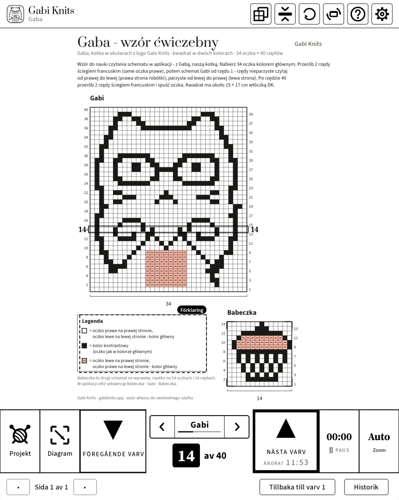
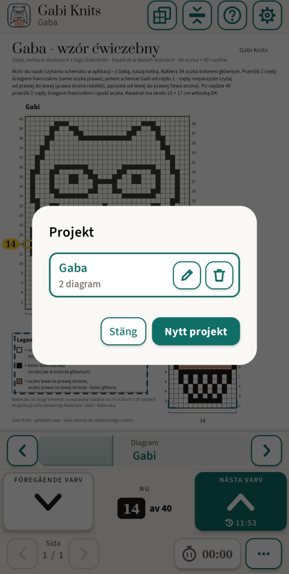
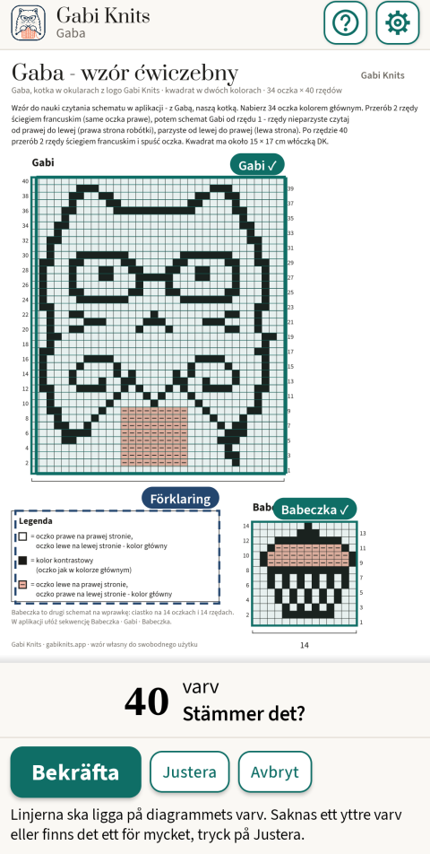
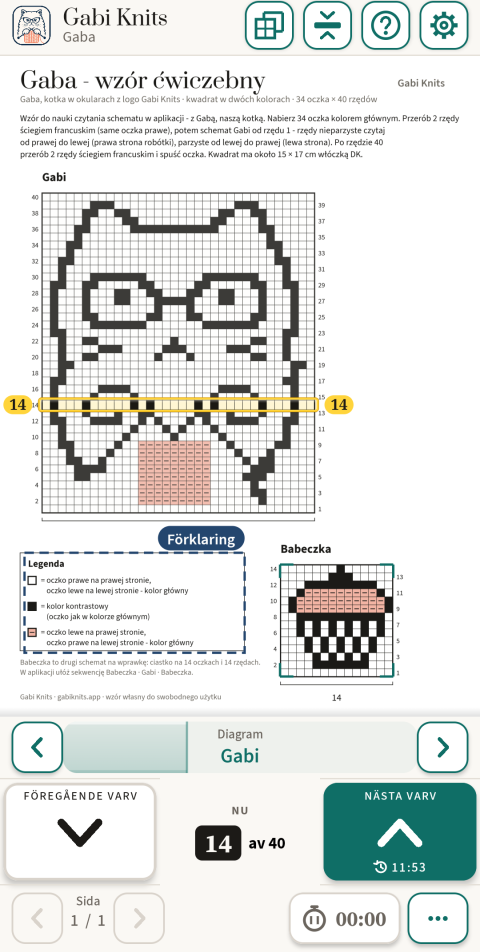
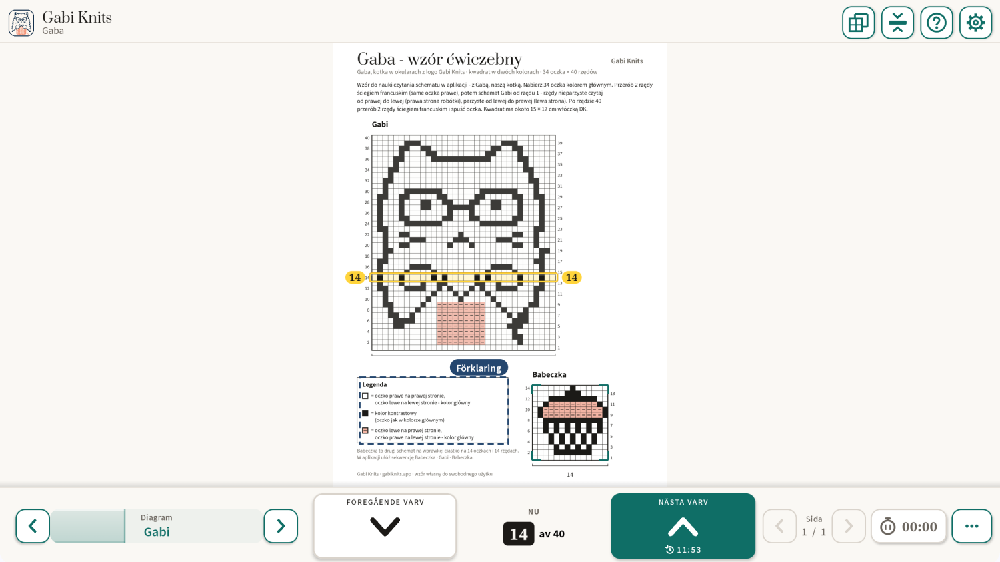

Diagramläsare för stickning
Du vet alltid vilket varv du är på.
Öppna ett PDF-mönster och tryck på diagrammet – Gabi Knits hittar själv varven och markerar tydligt det du stickar nu. En stor knapp tar dig till nästa varv, och framstegen sparas automatiskt.
- Inget konto
- Ingen reklam
- Fungerar utan internet

Hittar diagrammet själv
Tryck på diagrammet på sidan, så hittar appen själv ramen och varven. Du kontrollerar bara och bekräftar.
Varvet alltid i sikte
Det aktuella varvet är tydligt markerat, med numret på båda sidor. En stor knapp ”Nästa varv”, lätt att trycka på med en hand.
Gjord för e-ink
Svart på vitt, inga animationer, stora knappar och varvnummer – utformad för BOOX-plattor från första versionen.
För BOOX e-ink-plattor
Utformad för e-ink från början
Gabi Knits kom till på en BOOX Note Air, och där testas varje version. På e-ink är skärmen lugn: svart på vitt, inget som rör sig och inget som hänger på färg. På telefoner och vanliga surfplattor använder samma app färg och mjuka rörelser.
Tjock ram i stället för färg
Det aktuella varvet får en kraftig svart ram – tydlig på en svartvit skärm.
Inga animationer
Sidor och varv byts i ett steg. Inget glider eller tonar ut på e-ink-skärmen.
Stora knappar och siffror
Stora varvknappar och varvnummer som du kan läsa ovanför stickningen.
Testad på BOOX Note Air
Fungerar på BOOX-plattor med Google Play, både stående och liggande.
Så fungerar det
Tre steg från PDF till stickorna.

Öppna PDF-mönstret
Tryck på ”Projekt”, sedan ”Nytt projekt”, och välj filen. Projektet får ett eget namn och minns var du är.

Tryck på diagrammet
Gabi Knits hittar diagrammets ram och varv och ber dig kontrollera dem. Kanterna kan du justera för hand.

Sticka varv för varv
Det aktuella varvet är tydligt markerat, och räknaren visar ”Varv 14 av 40”. ”Nästa varv” går vidare, ”Föregående varv” går tillbaka.
Vad appen kan
Bara det som hjälper dig genom varvet – inget som är i vägen.
Sekvens
Bestäm i vilken ordning du stickar diagrammen, till exempel Muffin · Gabi · Muffin. På sista varvet går ”Nästa varv” själv vidare till nästa diagram och dess sida.
Teckenförklaringen till hands
Markera mönstrets teckenförklaring en gång. Den öppnas med ett tryck över sidan, och ditt varv stannar där det är.
Flera diagram i ett mönster
Varje diagram minns sitt varv. Du byter med pilarna ‹ › på listen vid varvräknaren – ett tryck, och sidan är fri – eller med den flytande widgeten.
Varvet mitt på skärmen
Diagrammet flyttar sig under en fast list, så varvet du stickar stannar mitt på skärmen.
Sticktid
Se hur lång tid ett projekt tog. Klockan går bara när du slår på den – även i projekt utan diagram.
Första projektet med handledning
Vid första starten guidar en kort handledning dig steg för steg genom övningsmönstret ”Gaba” – katten Gabi med glasögon och en muffin.
Framstegen sparas automatiskt
Varje projekt minns sida, diagram, varv och sticktid. Varvhistoriken visar de senaste flyttarna, och ”Tillbaka till varv 1” börjar om ett diagram.
Sex språk
Svenska, engelska, polska, tyska, norska och danska.
På e-ink, telefon och surfplatta
En app med egen layout för varje skärm. Stående eller liggande, zoom från 100 till 500 % eller Auto, och sidan kan vridas när ett diagram ligger på tvären.

Dina mönster stannar hos dig
Dina PDF-mönster, projekt och varvnummer stannar på din enhet. Appen använder internet bara för att genomföra ett köp och kontrollera att du har åtkomst – utan anslutning stickar du bara vidare.
Läs integritetspolicyn- Inget konto
- Ingen reklam
- Ingen spårning eller analys
- Fungerar utan internet
Frågor
Behöver jag ett konto?
Nej. Ingen registrering och ingen inloggning. Köp går via ditt Google Play-konto.
Fungerar appen utan internet?
Ja. Att läsa mönster och sticka kräver aldrig internet. Anslutning behövs bara för att köpa och ibland för att bekräfta prenumerationen.
Vilka enheter fungerar den på?
Android 8.1 eller senare: telefoner, surfplattor och BOOX e-ink-plattor med Google Play.
Vilka mönster passar?
PDF-mönster med ett diagram på ett rutnät. Testad på dussintals DROPS-diagram; appen hittar själv rutnätet och varven, och kanterna kan du justera för hand.
Vad kan jag göra utan att köpa?
Lägga till projekt, öppna mönster, bläddra bland sidorna och markera diagram. Att sticka varv för varv med markerat varv kräver den gratis provperioden eller ett köp.
Jag har en ny telefon. Betalar jag igen?
Nej. Installera Gabi Knits med samma Google-konto och tryck på ”Återställ köp”.
Hur säger jag upp prenumerationen?
I Google Play: Betalningar och prenumerationer → Prenumerationer. Dina projekt stannar där de är.
Finns det en version för iPhone eller iPad?
Inte än – Android kommer först.

Frågor eller idéer?
Skriv till Gabi – om ett mönster som inte fungerar, en idé till appen eller en fråga före lanseringen. Gabi läser varje meddelande.
contact@gabiknits.app